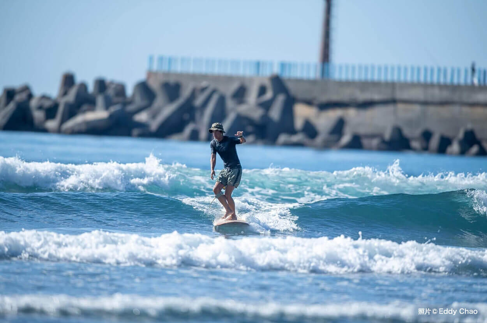

封面照片預留位置（之後換成烏石港實拍照）
浪點介紹・北部・烏石港

防波堤內側練習區
退潮時的礁岩區
烏石港完整攻略：從防波堤內側練起
烏石港是北部最容易入門的浪點之一，主要是沙灘地形，適合新手練習划水與站板的好地方。但別被「好上手」騙了——退潮時防波堤北側的消坡塊區暗流不小，這篇會把安全範圍講清楚。
浪況特性
屬於沙灘浪與地形浪的混合型態，西南到南風時最乾淨。退潮前後兩小時是黃金窗口，浪型會比滿潮時更有型、更好抓。
- 適合浪高：0.5～1.5m，超過 2m 建議進階者再下水
- 最佳風向：西南、南（離岸風）
- 底質：沙地為主，靠近防波堤轉礁岩

「防波堤北側消波區，注意退潮」——這句話我一開始也覺得是罐頭警語，直到有次退潮貪玩多划了兩趟，才知道那股流有多扎實。
注意事項
人潮集中在防波堤內側，外側浪型較大也較亂，新手不建議貿然移動過去。退潮後段消坡塊會裸露，務必留意腳踩位置。
周邊資訊
烏石港衝浪教室聚集地，租板／換裝設施齊全，開車到國5頭城交流道下來 或搭火車到頭城站再轉乘計程車，都方便抵達。